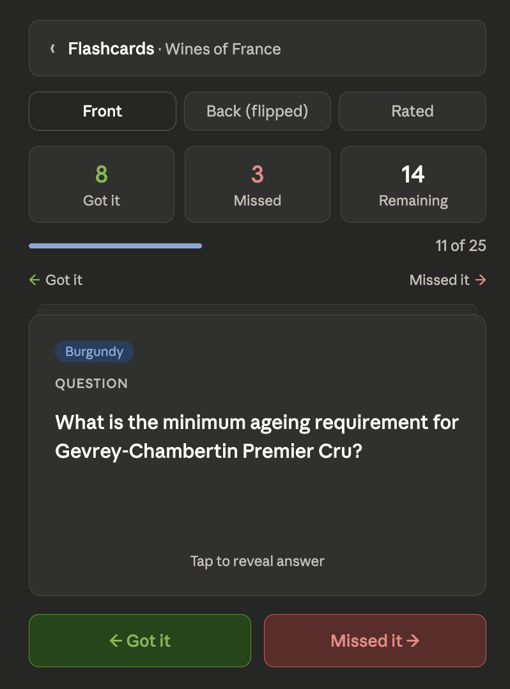
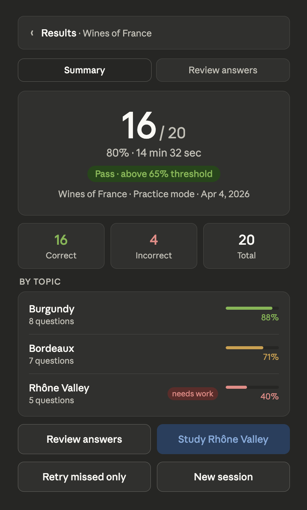
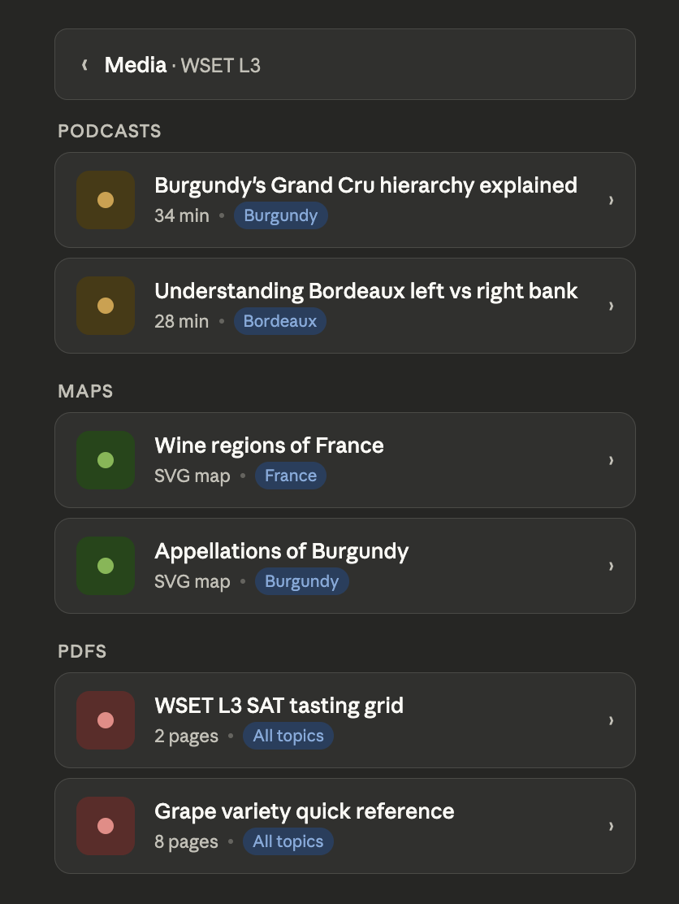
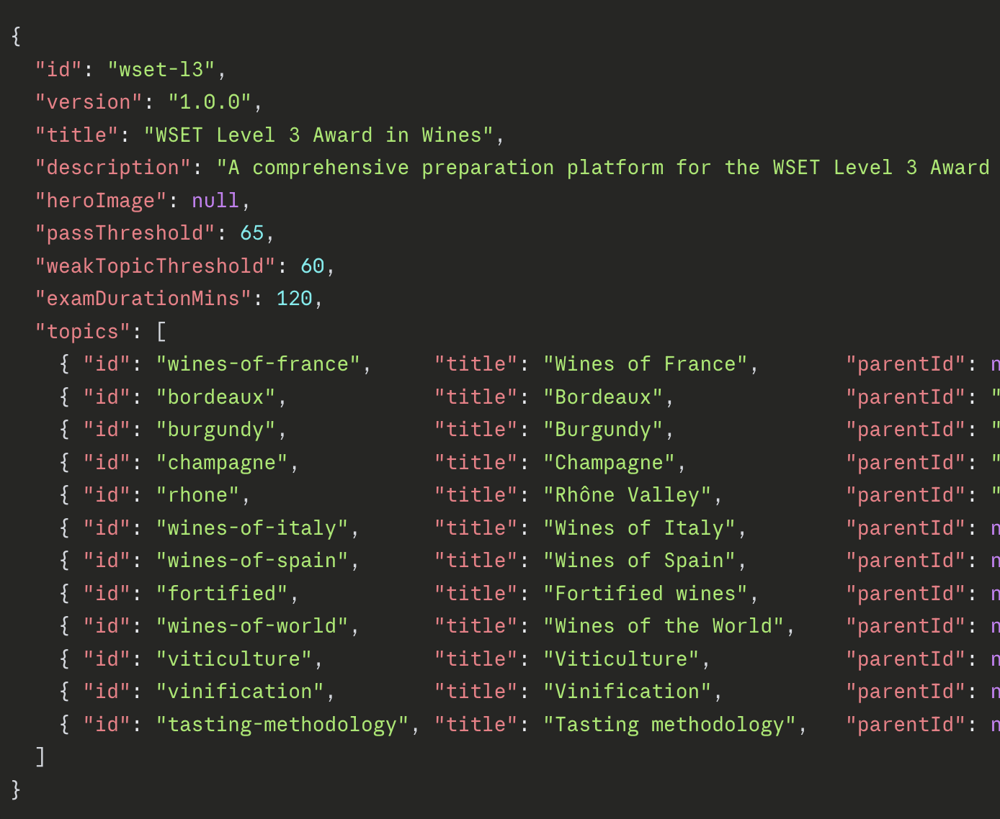

WSET-3 Interactive Study Guide
Final Project - This is what I'll present next week.
This will be a multi-modal, mobile friendly web app to allow students to to threoughly prepare for the WSET-LEVEL-3 certification test.
While this project will focus on these materials, the goal is to build an engine that can be fed JSON testing data for any subject so it becomes more of a studying platform.
Work Log
Week 1 - March 30 - April 6
This week I focus on establishing core functionality for the app. I will be building a simple quiz engine that can take in JSON data and generate interactive quizzes. The goal is to have a basic version of the quiz engine up and running by the end of the week, allowing me to test it with some sample questions from the WSET-3 curriculum. I will also be working on the overall design and user interface to ensure it's mobile-friendly and easy to navigate.
Week 2 – April 6–13
This week I moved from design into the build phase. With the architecture and components already defined, I worked through the build in a deliberate order: engine first, then contexts, shared components, and finally all five views. By the end of the week, the production build was clean, the test suite was up to 28 passing tests, and the bundle landed around 106kb gzipped.
I started with the core quiz engine, including session construction, answer evaluation, attempt tracking, session completion, shuffling, and proportional sampling. All of this was built and validated as pure functions before touching the UI. From there, I moved into the interface layer and built out each view: Dashboard with streak tracking, per-topic accuracy, and study mode entry; Quiz with a full state machine from configuration to results; Flashcards using CSS 3D flip cards with Fisher-Yates shuffling and shared attempt tracking; Media organized by type with accordion expansion and multi-source playback; and Results with session selection, score summary, topic breakdown, and expandable question review.



Week 3 – April 14–20
This week the platform moved from a working local build into production. After resolving a content path issue caused by the GitHub Pages base URL, the app deployed successfully and is now live. With the app running in a real environment, the focus shifted to content and presentation. On the UI side, the entire styling layer was refactored. Inline styles moved to a centralized CSS custom property system, DM Sans was added as the application font, and a full dark mode implementation was built using a single media query block. The color system is now token-based, meaning global changes touch one place rather than dozens of component files.
Content infrastructure was the other major focus. A reusable question generation prompt was developed and refined, incorporating schema rules, quality constraints, topicId mapping, concept duplication prevention, and batch size discipline. The subject configuration was expanded from 8 to 12 topics to support new content areas including viticulture, vinification, tasting methodology, and wines of the world. The media library was rebuilt from scratch with 10 region maps, 6 podcast stubs, and 6 PDF stubs, and the map preview component was updated to render actual images with a graceful error fallback. Question bank generation is now underway using the new prompt workflow.
